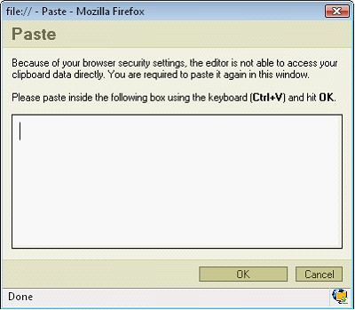

Paste
There are three options to paste into the text:
- by pressing the combination of CTRL+V keys or pressing
 on the toolbar. This option will paste data from your clipboard. However there's a possibility that because of your security settings placed in your browser the editor will be enable to paste the data directly from your clipboard. If that happens a popup window will appear with instruction what to do next
on the toolbar. This option will paste data from your clipboard. However there's a possibility that because of your security settings placed in your browser the editor will be enable to paste the data directly from your clipboard. If that happens a popup window will appear with instruction what to do next

- by pressing . This option pastes a plain text which you should first paste inside the following box by using the combination of CTRL+V keys.
- by pressing
 . This option pastes a text previously written in MS Word editor. By using this option you may paste the text from Word ignoring the Font Face definitions or removing Styles definitions.To paste the text just press CTRL+V key combination on your keyboard.
. This option pastes a text previously written in MS Word editor. By using this option you may paste the text from Word ignoring the Font Face definitions or removing Styles definitions.To paste the text just press CTRL+V key combination on your keyboard.
Copyright © 2009, Robert Moorehouse